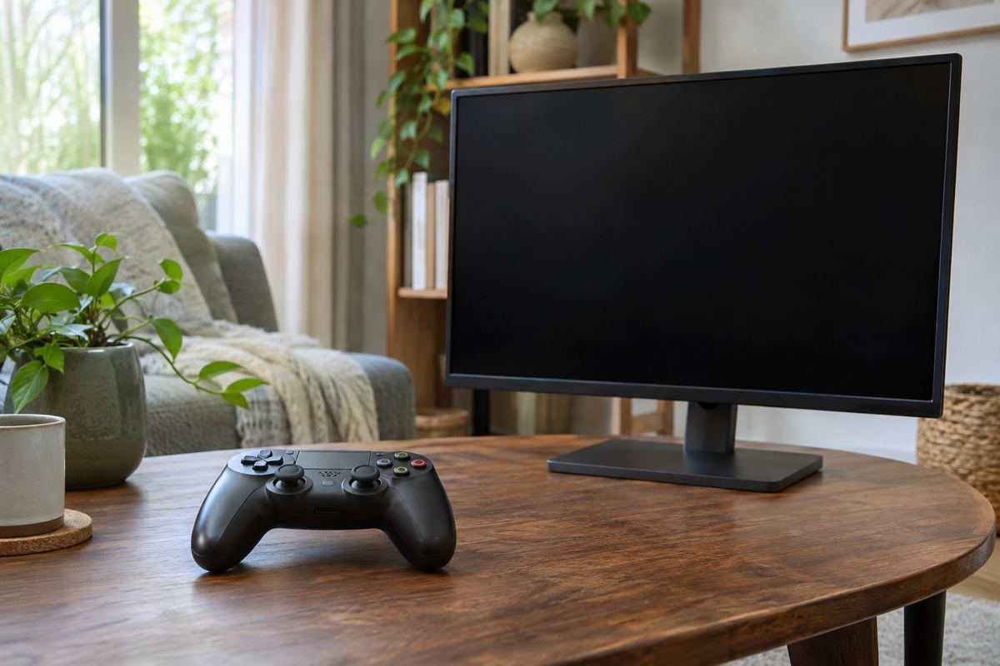

게임 주변기기 / EXPLAINED
1337개 한정 Raiju 컨트롤러, 2000Hz는 PC 조건부터 봐야
11월 3일 발표한 Signature Edition은 마그네슘 구조와 260g 무게를 내세웠다. 수집 가치와 조작 성능은 구분할 필요가 있다.

레이저가 Raiju V3 Pro Signature Edition 컨트롤러를 11월 3일 발표했다. 초도 물량은 개별 일련번호가 붙은 1337개로 제한하며, 마그네슘 합금 외골격과 260g 무게를 특징으로 내세웠다. PlayStation 5 공식 라이선스 제품이지만 최대 2000Hz 무선 폴링 수치는 PC에서의 조건이다. 콘솔 인증과 특정 PC 성능 수치를 같은 범위의 약속으로 읽지 않는 것이 중요하다.
한정판의 재료와 실제 손의 경험
레이저는 게임용 주변기기와 설정 소프트웨어를 만든다. Raiju는 2016년부터 이어진 컨트롤러 계열이며 이번 제품은 재료와 마감을 강조한 한정판이다. 금속 구조, 유리 터치패드, 표면 소재는 외관과 촉감에 영향을 줄 수 있지만, 이것만으로 사용자의 반응속도가 향상된다는 결론을 낼 수 없다. 260g 역시 회사가 제시한 무게이며 손 크기와 잡는 방식에 따라 가볍게 느끼는 정도가 달라진다. 이 기사는 실물을 쥐어본 사용기나 장시간 피로도 시험이 아니다.
스틱에는 비접촉 TMR 센서를 사용한다고 설명했다. TMR은 자기적 변화를 전기 신호로 읽는 센서 방식으로 이해할 수 있다. 접촉식 부품의 마모 문제를 줄이려는 접근이지만, 센서 이름만으로 어떤 고장도 생기지 않는다거나 모든 입력 오차가 없어진다고 단정할 수 없다. 스틱의 중심 부근에서 입력을 무시하는 데드존과 감도 설정도 조작감에 영향을 준다. 같은 하드웨어를 쓰더라도 게임별 설정과 사용 습관을 맞추는 작업이 남는다.
2000Hz와 전체 지연은 다른 숫자
폴링레이트는 장치가 입력 정보를 보고하는 빈도를 말한다. 2000Hz라면 이론상 보고 간격은 0.5밀리초지만, 게임에서 버튼을 누르고 화면이 바뀔 때까지 모든 지연이 0.5밀리초라는 뜻은 아니다. 게임 처리와 렌더링, 모니터 표시가 뒤따르기 때문이다. 레이저는 PC에서 HyperPolling Wireless로 최대 수치를 제공한다고 밝혔다. 이를 PS5에서도 동일한 조건으로 제공된다고 적을 수 없다. PC 호환성은 Sony Interactive Entertainment가 시험하거나 보증하지 않았다는 각주도 있다.
사용자가 다시 지정할 수 있는 다기능 버튼 여섯 개와 교체 가능한 스틱 캡, 뒤쪽 버튼 커버 등도 포함한다. 버튼을 손가락이 닿는 위치에 배치하면 엄지를 스틱에서 떼지 않고 명령을 넣을 선택지가 생긴다. 반면 추가 입력 위치에 익숙해지는 시간이 필요할 수 있고, 모든 게임이 같은 명령 배치를 쓰는 것도 아니다. 설정 앱과 프로필 저장 기능을 활용할 때에는 사용하는 플랫폼과 게임 규칙을 함께 확인해야 한다. 부품 개수가 곧바로 모든 사용자에게 더 나은 조작을 뜻하지는 않는다.
공식 제품 페이지는 Razer.com과 일부 RazerStore 판매를 안내하지만, 이번 보도자료만으로 한국 재고와 가격, 실제 배송일은 확인되지 않는다. 초도 한정 수량은 희소성 설명이지 향후 중고가격 상승을 보장하지 않는다. 독자가 비교할 기준은 한정 번호보다 필요한 입력 기능, 지원 환경, 보증과 총 구매 비용이다. 이 제품은 성능 주변기기와 수집품의 성격이 만나는 사례로 볼 수 있다. 이는 공개된 구성에 대한 해석이며, 실제 구매 만족도나 경쟁 성적을 예측하는 주장은 아니다.